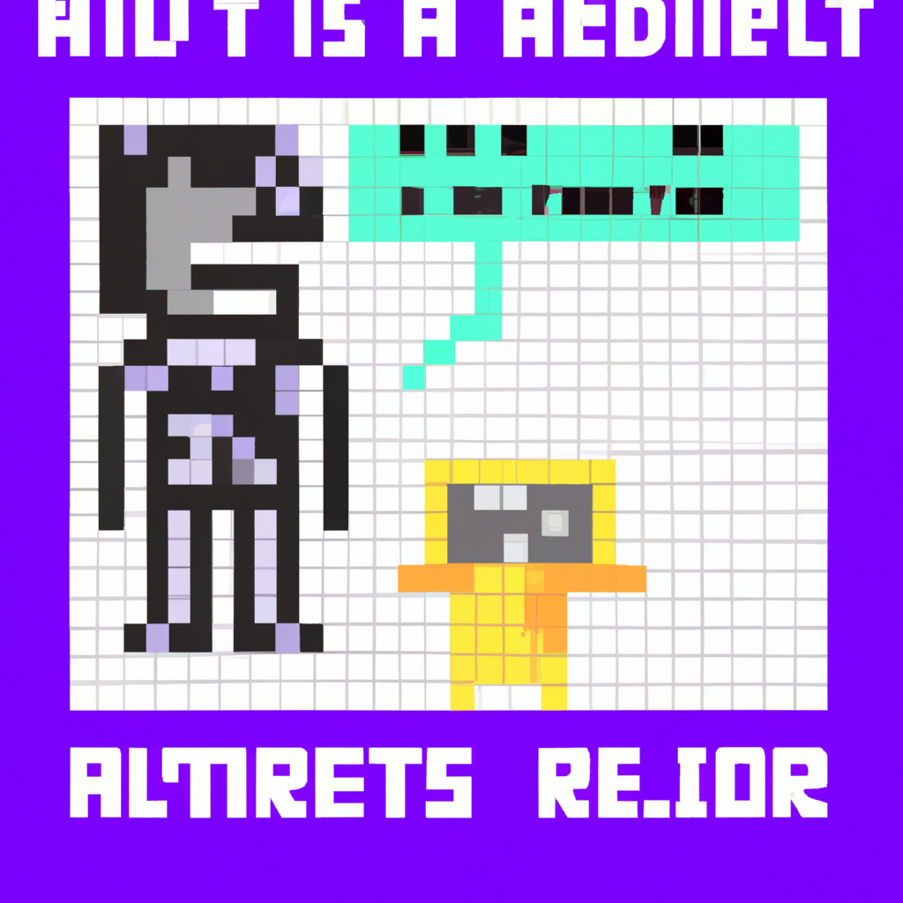

Why AI will never replace the radiologist
Radiology is a field of medicine that has been around for a long time. It is a field that has been traditionally conducted with the help of humans and is based on the medical imaging and analysis of the human body. In recent years, there has been a lot of talk about how artificial intelligence (AI) could potentially replace radiologists and how it could revolutionize the practice. While there is no doubt that AI can be used as a tool to help radiologists, there are several reasons why AI will never replace the radiologist.
First of all, AI is not able to replace the human eye. AI can analyze and interpret medical images, but it cannot see like a human does. AI does not have the same level of intuition and understanding of the human body that a trained radiologist has. A radiologist has the ability to recognize subtle differences and nuances in medical images that AI simply cannot detect.
In addition, AI is not able to replace the human touch. Radiologists are trained to physically interact with patients, something that AI cannot do. Radiologists are trained to understand the anatomy and physiology of a patient, as well as the patient's medical history. AI cannot provide the same level of care and understanding that a human can.
Finally, AI cannot replace the human connection. Radiologists are often the first point of contact for patients and are responsible for providing them with the necessary information to make informed decisions about their health. AI does not have the same ability to build relationships, empathize, and provide emotional support to patients.
In short, AI can be used as a tool to help radiologists diagnose and treat patients, but it will never replace the radiologist. AI cannot replace the human eye, touch, and connection that radiologists provide.